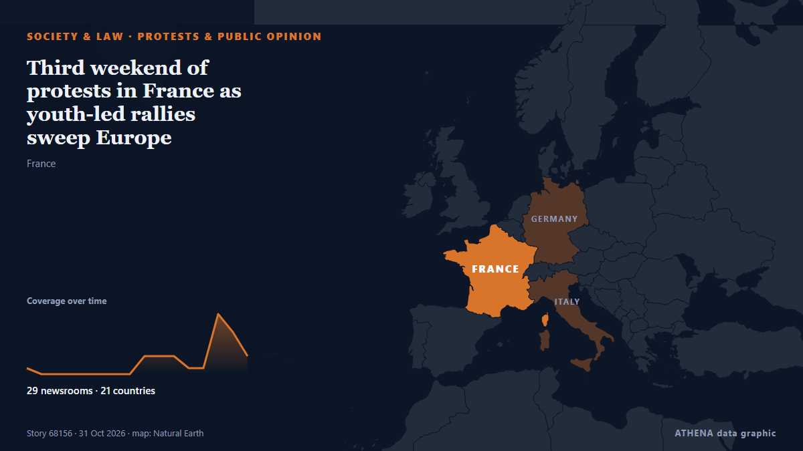

Third weekend of protests in France as youth-led rallies sweep Europe

The Interior Ministry told reporters that 70,000 people are estimated to have turned out for the main protest in Paris. von The Irish News (Belfast)
Unabhängig gemeldet von 35 Medien in 24 Ländern seit dem 30. Okt., zuerst von France 24 English; die Berichterstattung flaut ab. ATHENA stuft das Risiko als erhöht ein (4.7/10), vor allem wegen der Schwere des beschriebenen Schadens und seiner geografischen und sektoralen Reichweite. Die Konfidenz liegt bei 89 % (hoch): 35 Medien bestätigen es unabhängig, bei einer mittleren Verlässlichkeit der Quellen von 75 %. Medien nach Land: Frankreich (4), Japan (3), Vereinigte Staaten (3). Berichterstattung: 30. Okt. bis 2. Nov., 59 Stunden.
Warum es wichtig ist: Rechtliche und politische Änderungen verändern Rechte, Pflichten und öffentliche Leistungen für die Betroffenen.
Was sich geändert hat: 2 neue Berichte von 2 Redaktionen in den 24 Stunden bis 2. Nov..
Erste Schlagzeile: Third weekend of protests looms as tensions persist across France
Schlagzeilen werden auf Englisch angezeigt, wie veröffentlicht.
Auf einen Blick
Ausgewählt, bewertet und geschrieben nach der veröffentlichten Methodik von ATHENA. Kein Redakteur greift in einzelne Ereignisse ein. So entsteht ATHENA ›
| 30 Oct 14:10 UTC | 1 |
|---|---|
| 30 Oct 17:10 UTC | 0 |
| 30 Oct 20:10 UTC | 0 |
| 30 Oct 23:10 UTC | 0 |
| 31 Oct 02:10 UTC | 0 |
| 31 Oct 05:10 UTC | 3 |
| 31 Oct 08:10 UTC | 6 |
| 31 Oct 11:10 UTC | 1 |
| 31 Oct 14:10 UTC | 3 |
| 31 Oct 17:10 UTC | 15 |
| 31 Oct 20:10 UTC | 3 |
| 31 Oct 23:10 UTC | 3 |
| 01 Nov 02:10 UTC | 2 |
| 01 Nov 05:10 UTC | 0 |
| 01 Nov 08:10 UTC | 0 |
| 01 Nov 11:10 UTC | 1 |
| 01 Nov 14:10 UTC | 0 |
| 01 Nov 17:10 UTC | 0 |
| 01 Nov 20:10 UTC | 0 |
| 01 Nov 23:10 UTC | 1 |
| 30 Oct 15:12 UTC | 3.0 |
|---|---|
| 31 Oct 17:43 UTC | 4.5 |
| 31 Oct 19:46 UTC | 4.1 |
| 31 Oct 21:55 UTC | 5.0 |
| 02 Nov 10:09 UTC | 4.7 |
Warum diese Zahlen
Bedeutung
Risiko
Konfidenz
Die Berichterstattung – wer berichtete, und wann
Schlagzeile wie veröffentlicht · öffnet das Original- France 24 English · FrankreichThird weekend of protests looms as tensions persist across France
- The Canadian Press (via CityNews) · KanadaFrance heads into third weekend of protests as youth-led rallies sweep Europe
- Mainichi (English) · JapanFrance heads into third weekend of protests as youth-led rallies sweep Europe
- Asharq Al-Awsat (English) · Saudi-ArabienIsolated Clashes in France, as Tensions Erupt After Peaceful Marches
- ABC News (International) · Vereinigte Staaten320,000 protested nationwide, French government says
- Arab Times · KuwaitFrance heads into third weekend of protests as youth-led rallies sweep Europe
- France 24 English · FrankreichFrance: Two rallies against racism near Paris
- Arab News · Saudi-ArabienA third weekend of protests in France as youth-led rallies sweep Europe
- Stuff · NeuseelandFrance heads into third weekend of protests as youth-led rallies sweep Europe
- CBC News (alternative feed) · KanadaYouth-led protests sweep across France, Europe for a 3rd weekend
- Anadolu Agency (English) · TürkeiClashes reported in several French cities during nationwide protests
- Belfast Telegraph · Vereinigtes KönigreichThird weekend of protests in France as youth-led rallies sweep Europe
- Taipei Times · TaiwanFrance braces for third week of protests
- Hespress English · MarokkoPolice fire tear gas as thousands march in France
- Times of India · IndienTear gas, water cannon, clashes: France hit by third weekend of protests
- PBS NewsHour · Vereinigte StaatenA third weekend of protests in France as youth-led rallies sweep Europe
- Politico Europe · BelgienHundreds of thousands of protesters march across France for third week in a row
- The Rio Times · BrasilienFrance Cost-of-Living Protests Draw 320,000
- Xinhua (English) — page reader · ChinaAround 320,000 people take part in protests across France: media
- RFI English · FrankreichFrance sees third weekend of protests as youth-led rallies sweep Europe
- The Irish News (Belfast) · Vereinigtes KönigreichThird weekend of protests in France as youth-led rallies sweep Europe
- NDTV · IndienClashes Break Out As Hundreds Of Thousands Protest In France
- The Guardian · Vereinigtes KönigreichPolice clash with masked rioters after largely peaceful protests across France
- Al Jazeera English · KatarTension and clashes as hundreds of thousands protest again in France
- DW English · DeutschlandMore than 290 arrested in France as some weekend protests turn violent
- Jamaica Observer · JamaikaClashes break out as hundreds of thousands protest in France
- NPR World · Vereinigte StaatenFrance seethes again as youth-led protests sweep Europe
- Breaking Belize News · BelizeInternational News: Clashes erupt across France on rising cost of living and school conditions
- CNA (Channel NewsAsia) · SingapurClashes break out as hundreds of thousands protest in France
- The Jerusalem Post · IsraelIsolated clashes in France after protest marches, as police brace for Halloween night violence
- France 24 English · FrankreichSome 320,000 demonstrators take part in largely peaceful protests across France
- ABC News Australia · AustralienThird weekend of protests in France as youth-led rallies sweep Europe
- The Korea Times · SüdkoreaThird weekend of protests in France as youth-led rallies sweep Europe
- Indian Express · IndienJobs, housing, corruption: Why angry youth are protesting across Europe
- Mainichi (English) · JapanA third weekend of protests in France as youth-led rallies sweep Europe
- APA (English) · Aserbaidschan320,000 people take part in third wave of protests in France
- Xinhua (English) — page reader · ChinaAnother wave of protests sweeps Europe over various grievances
- Mainichi (English) · JapanA third weekend of protests in France as youth-led rallies sweep Europe